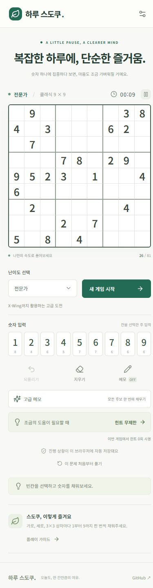

숫자 하나에 집중하는 짧은 시간. 네 단계의 난이도와 메모, 힌트로 즐기는 브라우저 스도쿠.
직접 만든 게임과 웹, 그리고 그 안에 담긴 이야기.
호기심에서 시작해 하나씩 만들어갑니다.
PLAY A LITTLE.
MAKE SOMETHING.
게임부터 웹까지.
아이디어가 실제로 움직이기까지.

숫자 하나에 집중하는 짧은 시간. 네 단계의 난이도와 메모, 힌트로 즐기는 브라우저 스도쿠.
직접 만든 작업들을 모으는 나만의 공간. 서버 준비부터 브랜드와 홈페이지를 만드는 과정까지 기록합니다.
Studio KWONYC는 개인의 아이디어를 게임과 웹으로 만드는 작업 공간입니다. 익숙한 일상에서 작은 재미를 찾고, 직접 만들면서 배우는 경험을 모읍니다.
완성된 결과물뿐 아니라 고민했던 선택과 해결 과정을 함께 기록합니다. 지금은 하루 스도쿠와 이 공간을 차근차근 만들어가고 있습니다.
GitHub에서 더 보기